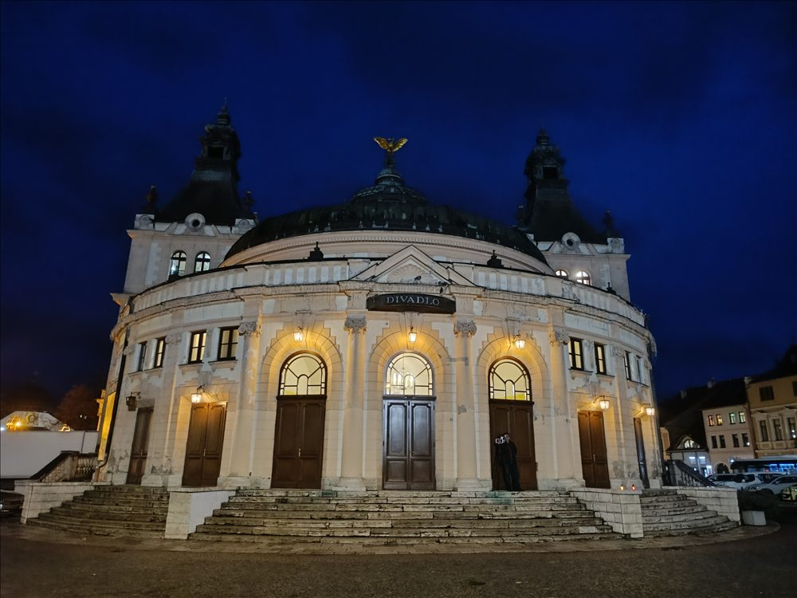
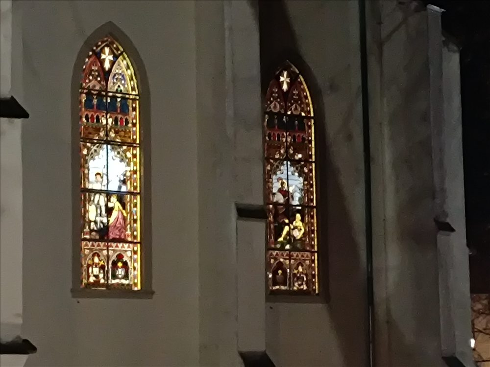
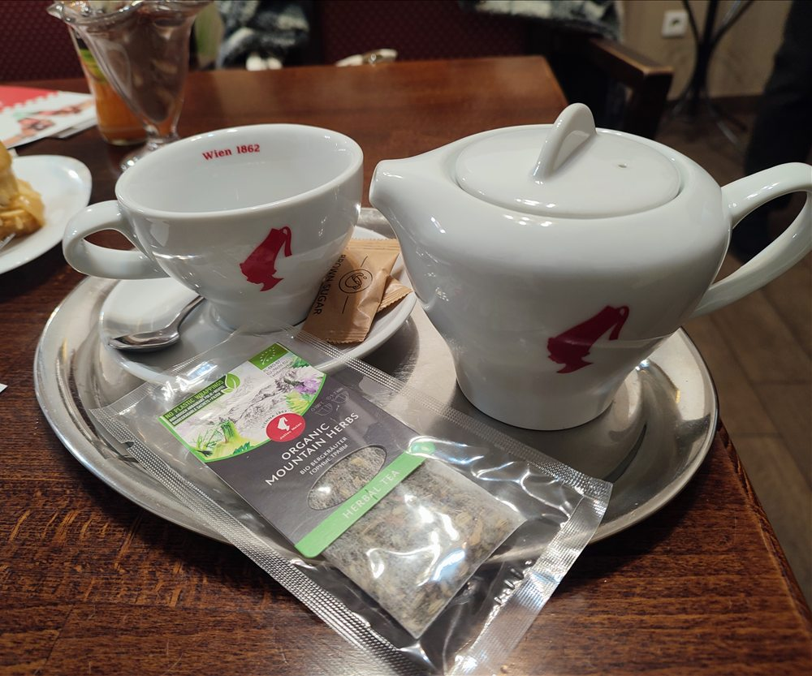
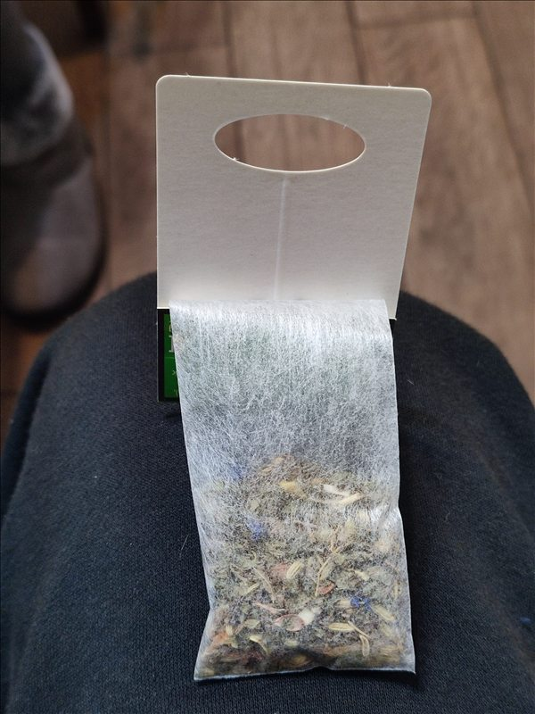
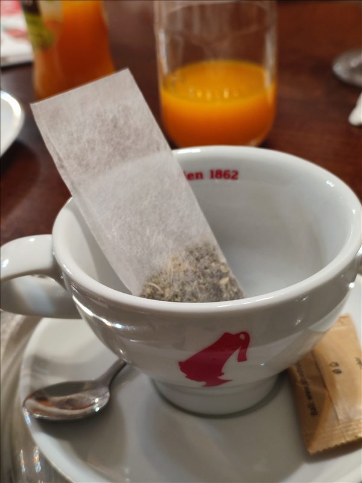
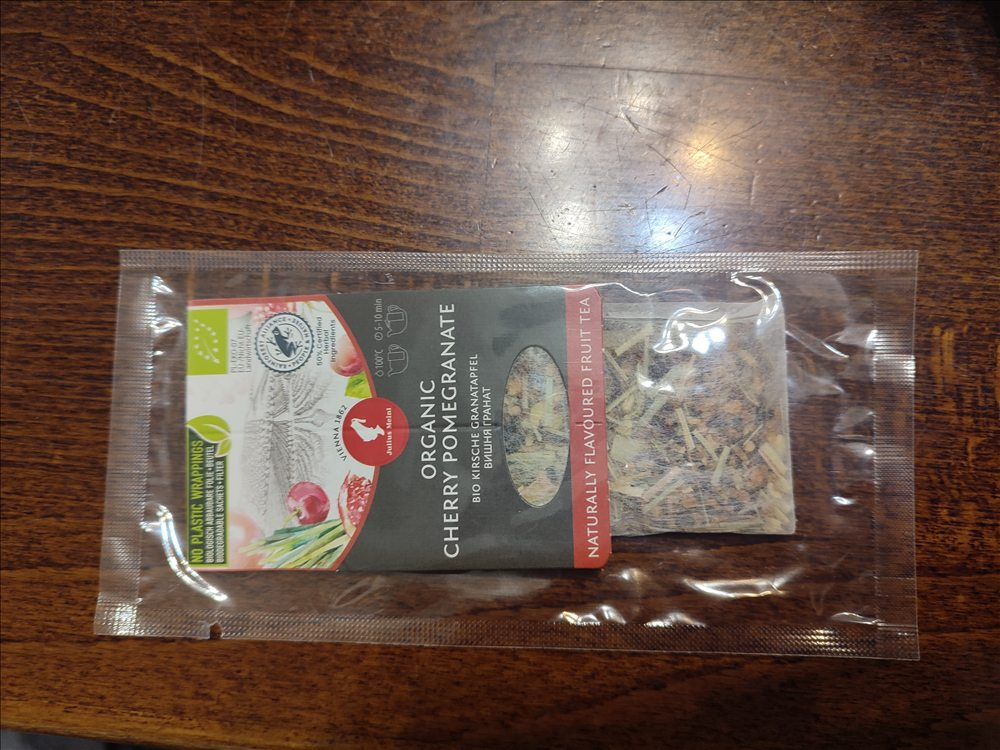
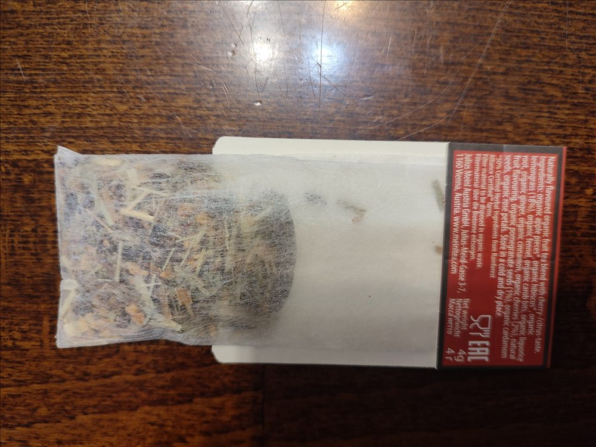
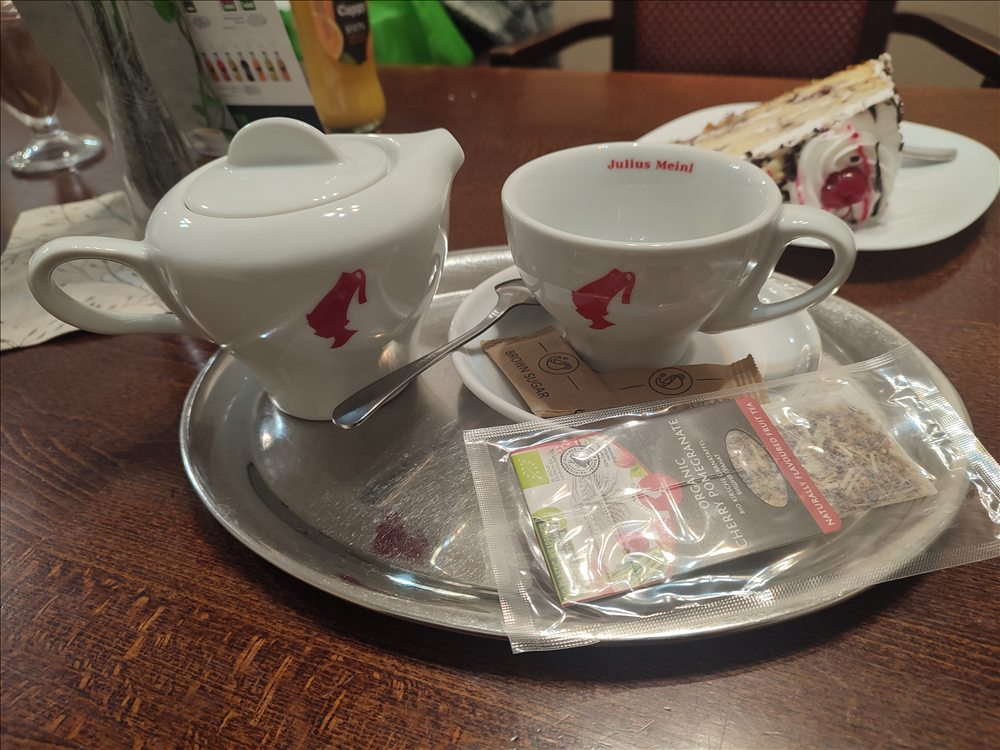
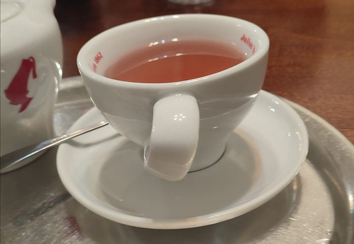
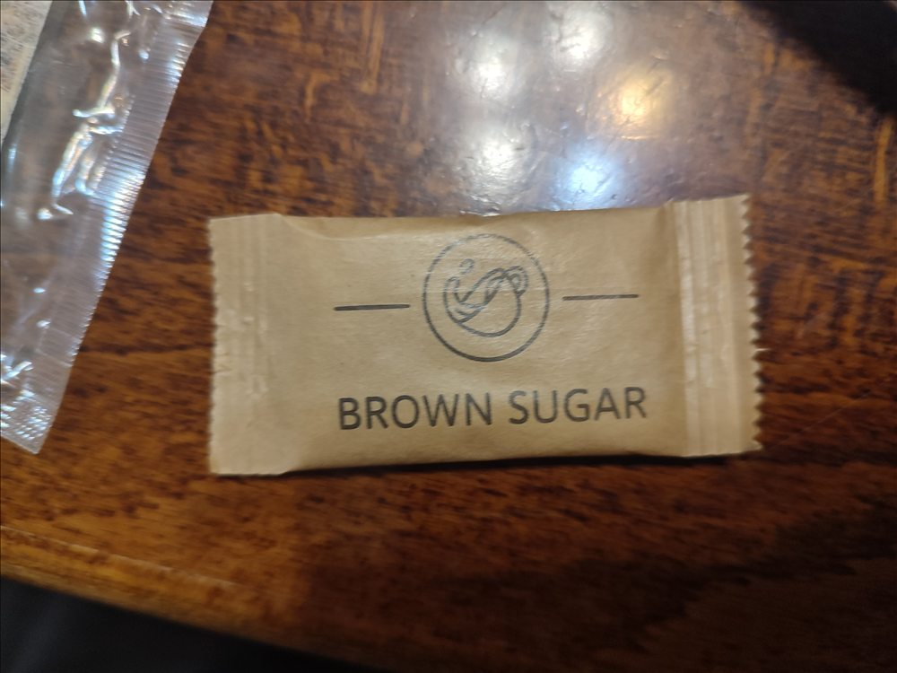

Neznáma pani a vrecúško v konvičke
Dve návštevy jednej cukrárne v Spišskej Novej Vsi: čaj len jednej značky, hrnčeky k nemu, balenie, aké som ešte nevidel – a pani od vedľajšieho stola, ktorá sa nehanbila poradiť.
Večer na námestí
S manželkou sme boli v Spišskej Novej Vsi na kultúrnom programe na námestí. Mierne mrholilo, ale chladno nám nebolo – zohrial nás punč. 🙂 Výklady obchodov už navodzovali vianočnú atmosféru a osvetlené námestie bolo večer naozaj pekné. Fotky sú trochu rozmazané, ale nálada sa na nich zachovala.


Ale o meste nech vám napíše niekto, kto si robí stránku o mestách. Ja som tu kvôli cukrárni – a, samozrejme, kvôli čaju.
Cukráreň jednej značky
V tej cukrárni sme boli dvakrát. Prvý raz asi dva týždne predtým – a vtedy som prvý raz videl, že niekde majú len jednu značku čaju. Bol to viedenský Julius Meinl, vystavených mali asi desať druhov. A k tomu hrnčeky aj konvičky s logom tej istej firmy. Takže aj sem sa oplatí prísť znovu – kým neochutnám všetky. 🙂

Vrecúško som od obalu hneď oddelil – aby som si nepokazil zberateľský kúsok. Dal som ho do hrnčeka a zalial vodou z konvičky. Až potom som zistil, že v konvičke je vody na dve-tri naplnenia hrnčeka. Druhý čaj teda bude asi menej farebný…
Ale bolo to fajn aj inak. Prvý čaj rýchlo vychladol – vody bolo málo a hrnček bol studený. Pri druhom naliatí bol hrnček už zohriaty a čaj si dlhšie udržal príjemné teplo. Neosladil som si ho – sladký bol veterník.


Keď sme odchádzali, chcel som to čašníčke pochváliť. Povedal som jej, že s niečím takým som sa stretol v krčme: poháre a podpivníky tam majú nápisy jednotlivých pivovarov – ale pokojne vám do nich nalejú aj kofolu. Pozerala na mňa ako na nejaké čudo a ďalej si robila svoju robotu. Všimol som si však, že keď sa o chvíľu na mňa pozrela so svojou kolegyňou, obom svietil na tvári pobavený úsmev.
Tak takto si my zberatelia čohokoľvek užívame život. 🙂
Balenie, aké som ešte nevidel
Už pri prvej návšteve ma prekvapilo balenie. Netvrdím, že také predtým neexistovalo – ale ja som ho videl prvý raz. Je to celé malé hniezdo: v priehľadnom sáčku je kartónové puzdro s oválnym okienkom, cez ktoré vidno čaj, a z puzdra vyčnieva ploché papierové vrecúško, dlhšie ako puzdro samo. Bez šnúrky, bez visačky. Na puzdre je napísané, že fólia aj vrecúško sa majú rozložiť v prírode.


Druhá návšteva
Tentoraz som si dal ovocný čaj Organic Cherry Pomegranate – čerešňa a granátové jablko. Prvá vec, ktorá ma zaujala, bol hrnček. Uško mal zvláštne tvarované, posadené mierne šikmo, a v ľavej ruke sa držal veľmi pohodlne.


Neznáma pani od vedľajšieho stola
Aj tentoraz som vrecúško od puzdra hneď opatrne odtrhol – kvôli zbierke. A teraz to príde: staršia pani od vedľajšieho stola ma upozornila, že to robím zle. Vrecúško som vraj nemal oddeľovať od obalu – obalom sa má zachytiť o okraj hrnčeka.
Neznáma pani, veľká vďaka, že ste sa nehanbili osloviť cudzieho človeka a poradiť mu, ako sa to robí!
A ja – zberateľ čaju 🙂 – som sa na ňu pozrel a usmial sa. Nadvihol som pokrievku konvičky a celé vrecúško, už bez zberateľského obalu, som ponoril do konvičky. Iba horný okraj vrecúška som privrel porcelánovou pokrievkou, aby nespadlo dnu.
Pani sa s údivom aj obdivom pozerala, že sa naučila niečo nové. A vôbec netušila, že keby bola ticho, správal by som sa ako barbar. 🙂

Príbeh rozprával autor zbierky, spísal ho Claude, spolutvorca stránky. Fotky sú z oboch návštev cukrárne.